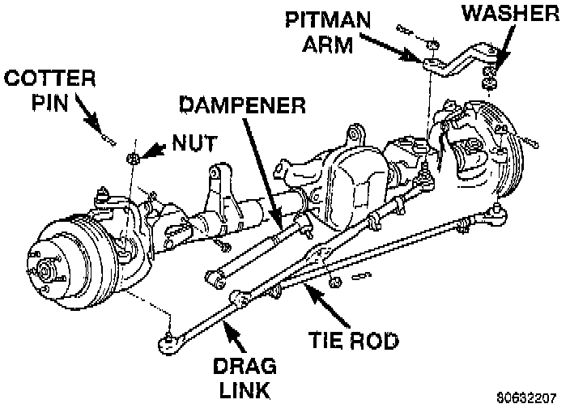

Steering Damper: Service and Repair

REMOVAL
1. Place the front wheels in a straight ahead position.
2. Remove the steering dampener retaining nut and bolt from the axle bracket.
3. Remove the cotter pin and nut from the ball stud at the drag link.
4. Remove the steering dampener ball stud from the drag link using C-3894-A puller, or equivalent.
INSTALLATION
1. Install the steering dampener to the axle bracket and drag link.
2. Install the steering dampener bolt in the axle bracket and tighten nut to 74 Nm (55 ft. lbs.).
3. Install the ball stud nut at the drag link and tighten nut to 74 Nm (55 ft. lbs.). Install a new cotter pin.